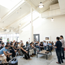
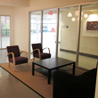
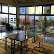
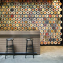
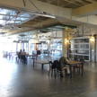

Details
As digital tools open up news kinds of expression, they intertwine more deeply with the timeless art of storytelling. With more voices, potential and publishing happening, one question becomes more urgent: what does it all add up to?
Last year technologists, journalists, game-makers, marketers and educators came together for Metro Vancouver's first Storytelling Unconference specifically focussed on digital. This year we're doing it all again, and something more.
With the same unconference format as last year, we're making a special call to hear about storytelling that makes a difference. From non-profits and NGOs on the front lines of change to individuals and communities making themselves heard, digital culture and tools present opportunity and a new landscape. An unconference is the perfect place to bring minds together on this theme, and a way to make things happen for more than just a day.
How it Works
As an unconference, all attendees are welcome to pitch sessions at the start of day. After a short voting round to measure interest, we decide on times and meeting areas. There are no keynote speakers and the agenda is defined by the people in the room. This year we're adding a general session at the end of the day to bring everyone back and share what we've learned.
Join us for what will be an amazing one-day experience in one of the Lower Mainland’s most beautiful and accessible spots. Registration will be open shortly! Follow @dsuvancouver for updates and to get in on the earlybird pricing.
The Venue - The Network Hub
Offering affordable coworking space, The Network Hub gives startups a starting point and freelancers a place to work that isn’t home or the local cafe. Professionally staffed with a spacious, modern design and state of the art facilities, we cannot think of a better spot or more gracious hosts for the first Digital Storytelling Unconference, and couldn’t ask for a warmer welcome from our title sponsors.
For meetings, a private office or shared hotdesk as well as virtual office services, look at what the Network Hub offers and just try to find a better price or more friendly people.
  {kind=link}
{kind=link}
{kind=link}
The River Market
In the heart of New Westminster a well-kept secret is quickly becoming a rejuvenated public centre. The River Market is at the centre of that change, set against the shore of the Fraser River and winding rail lines. A strong sense of industrial history and optimism can be felt throughout.
 {kind=link}
{kind=link}
{kind=link}
FAQ
What does the ticket price cover?
Admission and a package lunch from one of several great vendors in the Market. We will also have tea, coffee and water on hand in the event space. We’ll have more details on participating vendors closer to the day of the event. To keep our environmental footprint small, we encourage people to bring refillable water bottles, and we'll have refilling spots available.
Outside of Vancouver? How do I get there?
It’s way easier than you'd think. If you’re coming from Vancouver your best bet is to leave your car at home and take the Skytrain Expo line to the New Westminster station. The River Market is just a 5 minute walk from there towards the water. Don’t forget you’ll need a 2-zone ticket when you get on.
If you do drive, parking is available on the west side of River Market, which is the closest parking area to our venue.
What about accommodation?
Our friends at the River Market are putting together a special price with a nearby hotel, so if you want to make a weekend of your trip you’ll be able to do so and save a few bucks at the same time.
Will there be Wifi?
Yes, and lots of it. The venue and the wider market area have wifi so you can stay connected no matter where you take your breakout groups.
How about power outlets?
We have those too, but they're limited. We will try to have enough extension cords and power bars but encourage you to bring your own so we can make sure all the devices are juiced up.
Who is speaking?
As an unconference, all are welcome to pitch a session to speak in and the audience will vote to show how much interest there is. We don’t hold time slots ahead of the day, but in similar events we’ve rarely seen someone who shows up and wants to speak miss out on a chance.
What kinds of topics?
We’re focussing on digital tools for creating and conveying stories. If you’re looking for a place to do a reading of your short story from an iPad, this isn’t the place. If in doubt, get in touch and let us know what you’re thinking. Chances are there’s someone else who would love to talk about the same thing.
What about the venue?
Our title sponsor is the Network Hub, who have opened the doors of their amazing modern and open space right in the River Market building. The River Market staff are also providing support and were quick to point out the various smaller spaces throughout that can accommodate breakout groups and other ad-hoc discussions. We think the diversity and modern feel in an historic context will make the perfect environment for discovering and nurturing new ideas.
What about sponsors?
We are still looking for a few sponsors at the $250-$500 level to help cover remaining costs. Sponsors will receive a place on the website, special multiple mentions on our Twitter account and at the event. Any leftover funds will be donated to the literacy organization Frontier College after the event, with all sponsors listed as contributors. No matter how many digital tools we’re fascinated by, there are those who have missed out on the basics and we don’t want to forget about them.